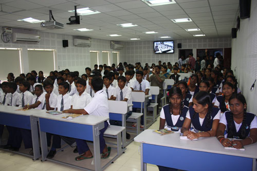
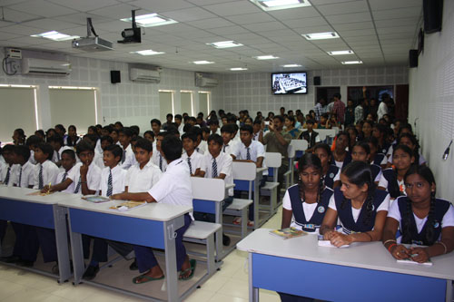

National Service Scheme

Open Day: IITH From Inside
Not many are lucky to have an Indian Institute of Technology in their proximity. Even fewer are fortunate enough to visit this institute of excellence and see what people are doing there. But more than 120 students fulfilled their dream, thanks to NSS chapter of IITH. On Saturday,17 Sept, IIT Hyderabad organized its very first Open Day. This 9-hour event, from 9 am to 6 pm, comprised of various laboratory tours, showcasing the various experiments going on therein and the activities which students plan and undertake in these world class facilities. All the state-of-the-art science and engineering laboratories were open throughout the day for visitors. Several routes were planned throughout the campus to make the visit a pleasant experience.
The institute also made special arrangements for rural children from nearby areas. IITH hosted approximately 110 such students to inspire them to take up further studies. Many demonstrations and experiments were performed for them. Among others, worth watching was the huge NMR machine, a Maglev setup in the Mechatronics Lab, Robotics demonstrations and Professor Tarun Panda’s chemical wonders. Various students projects were also on display ranging from small but simply awesome cranes, bots and bridges. Sun-sighting through the institute’s telescope, optical arrangements in the physics labs, and industrial machines in the Central Workshop amazed all.
The entry was free for all. Lunch was provided for everyone. It was a great opportunity for all to come, learn and discover.  
